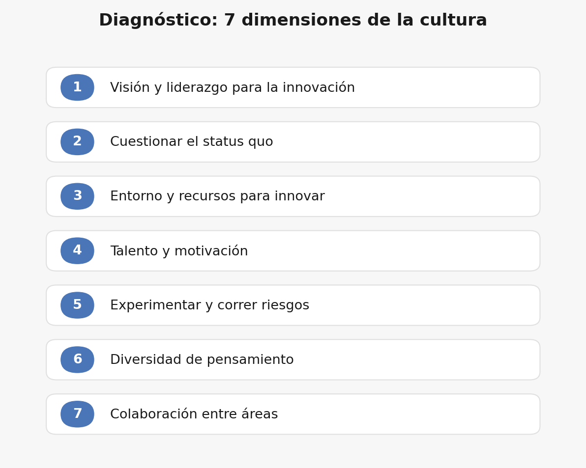
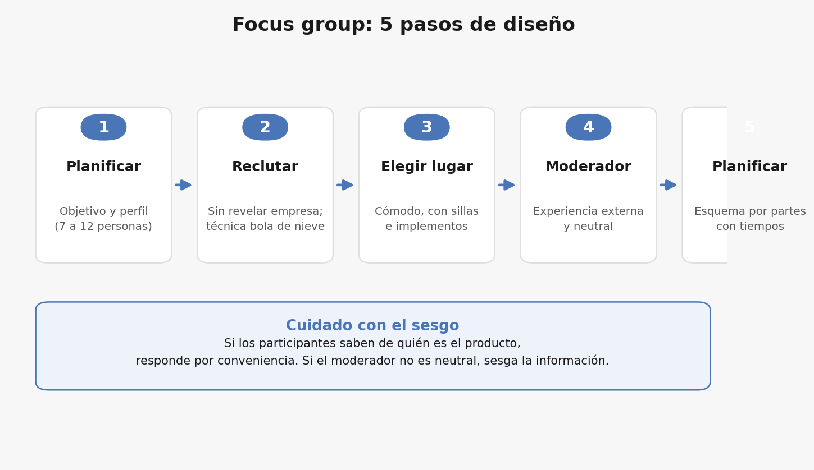

La cultura es "la ventaja invisible" (Kaplan): la única ventaja competitiva sostenible. Un diagnóstico convierte la percepción en datos revisables.
Pulsa Escape o haz clic fuera de la imagen para cerrar.
Clase 11 · Cultura de Innovación
1 Idea central
La cultura es "la ventaja invisible" (Kaplan): la única ventaja competitiva sostenible. Un diagnóstico convierte la percepción en datos revisables.
2 4 conceptos clave
Ventajas competitivas temporales; solo la cultura se sostiene.
Checklist que evalúa si la organización fomenta la innovación.
Entrevistas individuales: narrativas, no escalas.
Una docena de personas bajo un moderador, en 5 pasos.
3 Relación: las 3 fuentes del diagnóstico
Checklist previo: revisar las dimensiones antes del cuestionario.
"La ventaja invisible": 7 apartados con 5 opciones de respuesta.
Profundidad individual: historias de éxito y principal necesidad.
Dinámica de grupo: ~12 personas con moderador externo.
Checklist → panorama general → profundidad individual → dinámica de grupo.
4 Lo esencial de la clase
No miden con escalas: buscan narrativas.
Materiales: cronómetro, papel, cámara, grabador y quien toma notas.
| Diagnóstico sin dimensiones | Percepción subjetiva, sin plan. |
|---|---|
| Cuestionario sin seguimiento | Se pierde la base para priorizar. |
| Preguntas sugestivas | Respuestas sesgadas por conveniencia. |
| Revelar el producto | Responden lo que creen que quieren oír. |
| Moderador interno | No se habla con confianza. |
5 Flujo del concepto: las 3 fuentes combinadas
Cuestionario → one to one → focus group: de la percepción a datos revisables.
6 Gráficos de la clase


Un focus group de 10 personas evalúa un servicio nuevo. El mensaje de reclutamiento no revela la empresa ni el producto, y el moderador es externo: así las respuestas reflejan la opinión real, no la conveniencia. La técnica "bola de nieve" invita a una persona y le pide traer dos más.
Qué recordar
Idea clave: un diagnóstico convierte "creemos que innovamos bien" en datos que se pueden revisar y priorizar.
+Temas complementarios del apunte
Qué es: el conjunto de creencias, prácticas y comportamientos que hacen que la innovación sea parte de la rutina y no un evento aislado. Para qué sirve: sostener el crecimiento cuando los productos y modelos de negocio se agotan. Según Soren Kaplan: Las ventajas competitivas son temporales. Productos, servicios y modelos de negocio deben reinventarse continuamente para no caer en la obsolescencia. La cultura es…
¿Qué es un focus group? Qué es: un método de investigación cualitativa. Se agrupa a varias personas (usualmente una docena) para responder preguntas sobre un producto o servicio bajo las instrucciones de un moderador. Para qué sirve: hacer un estudio de mercado, generalmente antes de lanzar un producto, y en este contexto ahondar en la información del diagnóstico de cultura. Los cinco pasos para diseñarlo…
Planificar objetivo y perfil ──→ 2. Reclutar integrantes Planificar el focus group ←── 4. Elegir moderador ↑ 3. Elegir lugar └────────────────────────────┘ Paso 1 — Planificar el objetivo y el perfil
Término · Definición · Ejemplo Diagnóstico de cultura · Evaluación estructurada de si la organización fomenta o inhibe la innovación · Revisión de los 7 puntos de Kaplan Ventaja invisible · Nombre del modelo de cultura de innovación de Kaplan · Cuestionario de 7 apartados One to one · Entrevista individual en profundidad · Conversación con un líder de área Focus group · Grupo de 7-12 personas que discute un tema…
Pregunta aplicada — "Si tuvieras que diagnosticar la cultura de innovación de tu equipo actual, ¿cuál de los 7 puntos empezarías a evaluar y por qué?" Pregunta comparativa — "¿En qué situaciones un focus group aporta más que una encuesta cerrada? ¿Y cuándo sería al revés?" Pregunta crítica — "¿Tu organización permite cuestionar el status quo sin represalias? ¿Qué indicador observarías para saberlo?"